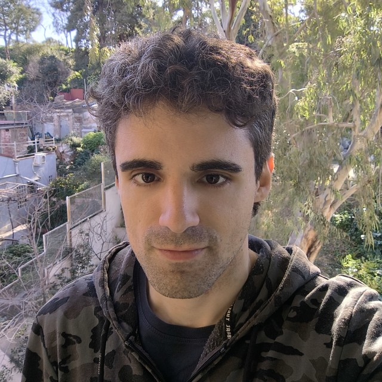

Rafael León Carrasco
Bio

Hello! My name is Rafael León Carrasco. I have a Bachelor’s Degree in Chemical Engineering and a Master’s in Interdisciplinary & Innovative Engineering by the UPC (Polytechnic University of Catalonia). I am an engineer passionate about technology and data science. My work focuses on developing Machine Learning models for diagnosing rare diseases, and collaborating closely with medical institutions such as Hospital Sant Joan de Déu and Hospital Sant Pau for data analysis. I specialize in using graph models and neural networks to extract insights from clinical data. Moreover I have programming and server management experience.
With a strong background in engineering and research experience, I enjoy facing complex challenges and finding efficient solutions. Additionally, I quickly adapt to new technological landscapes required.
Professional Experience
Research Assistant Technician at CREB (UPC)
May 2024 – Present
- Development of ML algorithms for diagnosing rare kidney diseases.
- Performance analysis of diagnostic models.
- Maintenance of the HDSI Share4Rare server (Django) and diagnostic platform (Springboot).
Research Assistant Technician at CREB (UPC)
November 2022 – May 2024
- Development of diagnostic platforms for rare kidney diseases in collaboration with Hospital Sant Pau.
- Clinical data analysis and server maintenance.
Research Assistant at Hospital Sant Joan de Déu
July 2023 – July 2024
- Analysis of rare disease data to improve early diagnosis.
- Application of advanced statistical techniques and ML models.
Skills
- Programming in Java and Python.
- Experience with Machine Learning, graph models, and statistical analysis.
- Familiarity with servers Nginx, Apache, Django, and Springboot.
- Problem-solving skills and teamwork experience.
- Organization and adaptability to new technological challenges.
Publications
2024
1. # 2068 Factors affecting disease progression in individuals with heterozygous COL4A3/COL4A4 pathogenic variants
MP Teran, M Furlano, M Pybus, VM Jiménez, E Gomá-Garcés, IG Carrillo, …
Nephrology Dialysis Transplantation, Vol. 39 (Supplement_1), gfae069-0238-2068, Issue (2024)
[DOI]
2023
2. # 4037 DEVELOPMENT OF AN EXPERT MODEL FOR THE DIAGNOSIS OF INHERITED KIDNEY DISEASES
LF de Arizón, ERV Ramírez, R Leon, MP Teran, M Furlano, M Vallverdu, …
Nephrology Dialysis Transplantation, Vol. 38 (Supplement_1), gfad063c_4037, Issue (2023)
[DOI]
2022
3. Analysis of clinical diagnostics in human genetics with semantic similarity searches in ontologies
R León Carrasco
Universitat Politècnica de Catalunya, Vol. , Issue (2022)
[DOI]
2019
4. Modelando el paisaje de energía libre de una molécula
R Leon Carrasco
Universitat Politècnica de Catalunya, Vol. , Issue (2019)
[DOI]
5. Modelando el paisaje de energía libre de una molécula
RL Carrasco
Universitat Politècnica de Catalunya. Escola d’Enginyeria de Barcelona Est, Vol. , Issue (2019)
[DOI]